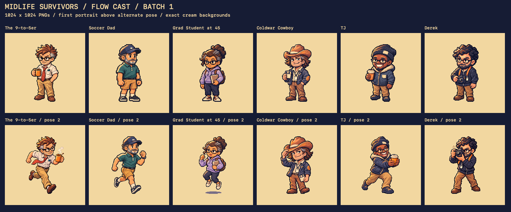
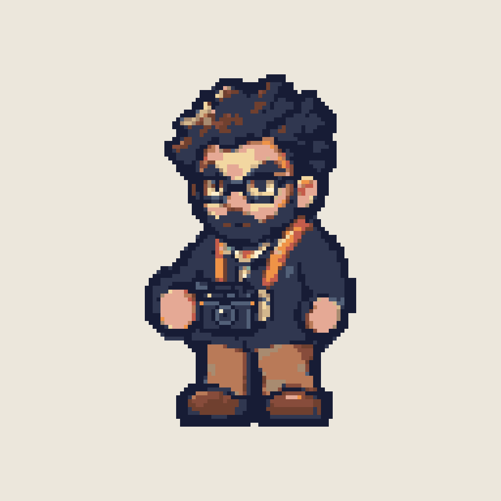

Flow cast, batch 1
Four heroes, TJ and Derek. Each has two full-body 1024×1024 PNGs on exact cream. Compare the identity reference with the illustrated portraits below. Tap a portrait for the full file.
Contact sheet · Manifest · Prompts

Derek

Identity referenceClean portraitAlternate poseReady for Rami's review. June, the enemies and the bosses follow after this batch.